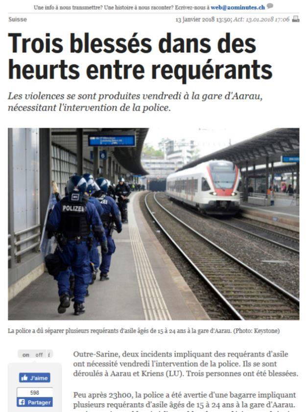

Ce que des ignares appellent le « progrès civique » n'est en fait qu'une accélération d'une dégradation spirituelle et donc étatique tellement rapide qu'un homme du système ne parvient pas du tout à la discerner. Sa mise à mort et celle des siens s'opèrent sous ses yeux stupides sans qu'il n'ait ne serait-ce que l'idée de vouloir y échapper. Dès lors, l'attitude de ceux qui voient et parviennent à prédire le désastre inévitable, agissant donc contre une puissance meurtrière implantée au sommet de nos États, doit consister en une simple éducation des leurs ainsi qu'en de rares tentatives de prévenir les sociétés de leur disparition en espérant que, cette fois-ci, ils seront entendus. Espoir tout à fait vain, il faut l'admettre avec lucidité.
Il y a maintenant à peine plus de deux ans, dans une publication parisienne qui s'avère aujourd'hui prophétique, j'ai tenté d'alerter ma patrie d'adoption, la Suisse, quant à l'inévitable guerre civile qui la dévastera si la Confédération helvétique continue d'être submergée par des tribus afro-asiates. Voici ce que j'écrivais :
« C’est la « tactique du voleur chinois » : le criminel entre dans votre boutique et déplace par des mouvements imperceptibles l’objet convoité vers la sortie ; une fois près de la porte, il s’en saisit et se sauve. Or la Suisse a accepté, voire partiellement assimilé sur son sol, des populations issues de pays dépendant depuis des siècles de la culture européenne et germanique. Avec l’Afrique et l’Asie qui s’abattent actuellement sur elle, elle sera désarmée, car elle n’aura aucun moyen pour communiquer avec ces allogènes que les journaux helvétiques du système montrent, dans un effort de manipulation, nettoyer les chemins suisses avec des râteaux. Quelle image d’Épinal ! Certes, les envahisseurs se tiennent calmes pour l’instant, car, réfugiés statuaires, ils perçoivent le minima social suisse. Il faut qu’en Suisse, l’on soit conscient que ce minima social helvétique surpasse le traitement officiel du chef d’État-major éthiopien ou du président du Mali !
Tant que la Suisse aura la possibilité d’injecter ces sommes monstrueuses – qui, par ailleurs, créent un appel d’air pour des tribus d’Érythrée –, elle connaîtra une certaine paix civile, qui ressemble cependant plus à une anesthésie temporaire. Mais dès que l’argent manquera (car les élites ne font plus confiance aux banques suisses qui ont perdu la guerre financière face aux États-Unis) ou dès que se formeront différentes communautés allogènes sur le sol helvétique lesquelles pourront dès lors faire chanter le pouvoir fédéral ce sera la fin de la Confédération helvétique ! » (Dr Anatoly Livry, « Pour l’attribution post-mortem du Prix Nobel de la Paix à Kadhafi », publié le 30 août 2015, Paris, Riposte Laïque http://ripostelaique.com/pour-lattribution-post-mortem-du-prix-nobel-de-la-paix-a-kadhafi.html).
Or il s'est écoulé un temps insignifiant à l'échelle de l'histoire européenne et ma prévision se révèle totalement exacte : même l'un des pays les plus riches du globe, ne souffrant ni de la monnaie unique ni de la participation dans les soviets dits européens de Bruxelles, ne parvient à nourrir les hordes d'envahisseurs se comportant sur son sol comme sur des territoires conquis, imposant dès lors leur volonté d'une manière de plus en plus insolente, apostrophant les autochtones par le fameux « Vae victis » déclamé en dialectes érythréen, kabyle ou albanais : « Kriens (Suisse) : les migrants se révoltent et saccagent le centre d’hébergement en raison de la baisse de leur allocation. »
À ce stade-là, il suffit de porter notre regard vers la France voisine qui vient d'intégrer les dispositions de l'état d'urgence dans la législation « ordinaire » de la République. Tout comme en France, des enclaves composées exclusivement de populations allochtones verront le jour en Suisse, avec la complicité de quelques élus irresponsables. Ensuite, ces no-go zones se livreront des guerres entre elles, marquant leurs frontières par l'incendie de maisons et de voitures que l'État collaborateur évitera naturellement de comptabiliser dans les frais de l’invasion car le solde du grand remplacement doit obligatoirement être positif pour satisfaire les manipulateurs de statistiques (ce qui est un pléonasme). Pour terminer, ces endroits ayant désigné leurs maîtres étrangers par la lutte interethnique deviendront un État dans l'État, influençant la politique nationale suisse (politiques religieuse, financière, linguistique, militaire, culturelle, etc.), tout comme cela se passe dans les nations qui se sont laissées submerger précédemment – la France, la Belgique, la Suède ou l'Italie. In summa, une lutte à mort est menée contre les nations blanches de l'Eurasie par une poignée de créatures étant parvenues au pouvoir planétaire que nul n'ose plus leur disputer, et ce, avec une complicité engagée des pseudo-élites universitaires, surtout de ceux que l'on appelle la « droite » académique subvertie par un trotskysme pratiquant le terrorisme intellectuel depuis plusieurs générations et ayant utilisé pour la démolition des nations indoeuropéennes chaque tendance doctrinale, depuis Foucault jusqu'à Soljenitsyne 1. Ce que subissent les peuples blancs depuis l'Écosse jusqu'à Vladivostok, c'est n'est nullement une attaque religieuse, mais une tentative d'anéantissement raciste – les dieux, nous le savons depuis Xénophane (de Colophon), ne sont que les images des ethnies qui les portent dans leur conscience génétique : « Les Éthiopiens disent de leurs dieux qu'ils sont camus et noirs, les Thraces qu'ils ont les yeux bleus et les cheveux rouges. » (21 B 16 DK).
Au fil des années, je suis parvenu à créer un séminaire universitaire unique en son genre : en analysant les centaines de dénonciations et d'« expertises » du Conseil national des universités (CNU) français qui, à l'origine, visait exclusivement à faire étouffer dans un microcosme franco-français mes découvertes sur « Nabokov le nietzschéen »2 et Tête d'Or de Claudel hypostase de Julien l'Apostat3, j'ai réussi à dresser une généalogie du désastre universitaire européen, allant de l'Institut de France jusqu'aux fonctionnaires hystéro-trotskistes portant le titre de professeur universitaire. Au terme de cet enseignement, j'offre la solution – peut-être unique – pour notre univers héritier de l'hellénisme pagano-chrétien, posant les bases d'une contre-révolution spirituelle salutaire. Il serait peut-être temps que je sois entendu …
A.L.
1. Др. Анатолий Ливри, «Микитка купчик и Вечность», Российский колокол, Москва, n° 5-6, октябрь 2016, с. 242-244. Часть материалов международной конференции, организованной Факультетом Зарубежной Литературы МГУ им. Ломоносова : « Франция: крах гуманитарного образования. Катастрофа французской славистики». «ЧЕТЫРНАДЦАТЫЕ АНДРЕЕВСКИЕ ЧТЕНИЯ. ЛИТЕРАТУРА ХХ – XXI вв.: ИТОГИ И ПЕРСПЕКТИВЫ ИЗУЧЕНИЯ». УНИВЕРСИТЕТ РОССИЙСКОЙ АКАДЕМИИ ОБРАЗОВАНИЯ. 23 января 2016 г. A ce propos, cf. p. ex. : Dr Anatoly Livry, « L'anarcho-trotskiste Pierre Pascal et son engeance », Geopolitika, Moscou, le 1er décembre 2017 : https://www.geopolitica.ru/fr/article/lanarcho-trotskiste-pierre-pascal-et-son-engeance ).
2. Anatoly Livry, Nabokov le nietzschéen, Paris, Hermann, 2010, 212 p.
3. Anatoly Livry, « Tête d’Or et Hélios Roi, la rupture du Cercle de l’Eternel Retour », Bulletin Guillaume Budé, l’Association d’Hellénistes et de Latinistes français, responsable de l’édition : professeur Alain Billault, alors directeur de la Faculté d'Études grecques à Paris IV- Sorbonne, Paris, 2008 – 2, p. 167-193. Exposé effectué dans le cadre du colloque « Écrivains du sacré » organisé par la Faculté de la littérature comparée de Paris IV – Sorbonne où Anatoly Livry fut invité à intervenir par le professeur Dominique Millet-Gérard, membre du conseil d'administration de l'Association Guillaume Budé, en février 2007.
Partager cette page